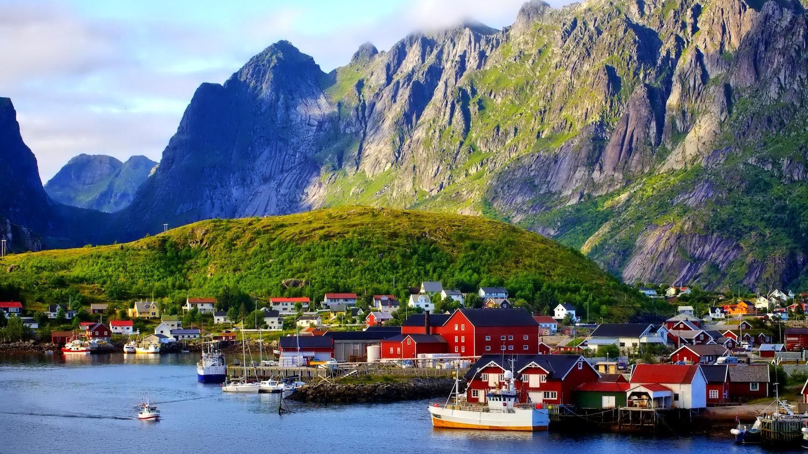

Norvegjia është një vend i vendosur në Evropën Veriore në pjesët veriore dhe perëndimore të Gadishullit
Skandinav. Pjesa më e madhe e vendit kufizohet me ujin, përfshirë hyrjen e Skagerrakut në jug, Detin e Veriut në
jug-perëndim, Oqeanin Atlantik të Veriut (Detin Norvegjez) në perëndim dhe Detin Baren në veri. Ajo ka një kufi tokësor
me Suedinë në lindje dhe një kufi më të shkurtër me Finlandën dhe një kufi edhe më të shkurtër me Rusinë në verilindje.
Norvegjia ka një formë të zgjatur, një nga vijën më të gjatë dhe më të thyer në botë, dhe rreth 50,000 ishuj larg vijës
bregdetare të saj. Shtë një nga vendet më veriore në botë dhe është një nga vendet më malore të Evropës, me zona të
mëdha të mbizotëruara nga Malet Skandinave. Lartësia mesatare e vendit është 460 metra (1.510 ft), dhe 32 përqind e
territorit ndodhet sipër vijës së pemës. Zinxhiri i majave të tij në një gjatësi vendi është gjeologjikisht i
vazhdueshëm me malet e Skocisë, Irlandës dhe, pasi kaloi nën Oqeanin Atlantik, malet Appalachian të Amerikës së Veriut.
Gjeologët pohojnë se të gjitha këto formuan një gamë të vetme para shpërbërjes së superkontinentit antik Pangea. [1]
Gjatë periudhës së fundit akullnajore, si dhe në shumë epokë të hershme akulli, praktikisht i gjithë vendi ishte i
mbuluar me një fletë akulli të trashë. Lëvizja e akullit gdhendi lugina të thella. Si rezultat i gdhendjes në akull,
Sognefjorden është fjordi i dytë më i thellë në botë dhe Hornindalsvatnet është liqeni më i thellë në Evropë. Kur akulli
u shkrinë, deti mbushi shumë prej këtyre luginave, duke krijuar fjorde të famshme të Norvegjisë. [2] Akullnajat në zonat
më të larta malore sot nuk janë mbetje të fletës së madhe të akullit të epokës së akullit - origjina e tyre është më e
fundit. [3] Klima rajonale ishte deri në 1–3 ° C (1.8–5.4 ° F) më e ngrohtë në 7000 para Krishtit në 3000 para Krishtit
në optimale klimatike Holocene, (në lidhje me periudhën 1961-90), duke shkrirë akullnajat e mbetura në male pothuajse
plotësisht gjatë asaj periudhe.
Edhe pse ka kohë që është lëshuar nga pesha e madhe e akullit, toka është përsëri duke u zmbrapsur disa milimetra në
vit. Kjo rikthim është më e madhja në pjesën lindore të vendit dhe në pjesët e brendshme të fijeve të gjata, ku mbulesa
e akullit ishte më e trashë. Ky është një proces i ngadaltë, dhe për mijëra vjet pas përfundimit të epokës së akullit,
deti mbuloi zona të konsiderueshme të asaj që është sot tokë e thatë. Ky shtrat i detit të vjetër tani është ndër tokat
më produktive bujqësore në vend.
